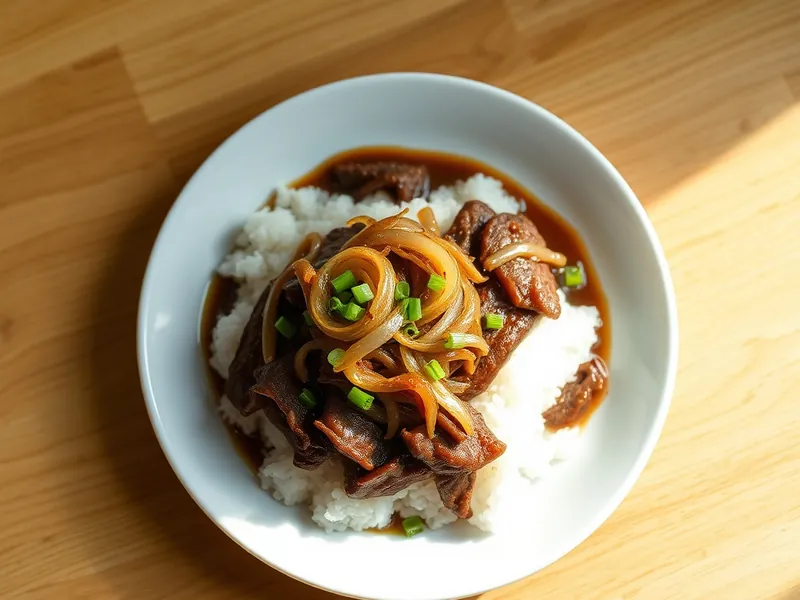

Гюдон - рис с говядиной и луком по-японски
Тонкие ломтики говядины с мягким луком в сладко-соевом соусе на горячем рисе
30 мин2 порц.570 ккал на порциюБ 31 · Ж 16 · У 78Азиатская кухня
Открыть в приложении: порции, таймеры, список покупок
Продукты на 2 порц.
- Рис150 г
- Вода400 мл
- Говядина250 г
- Лук репчатый2 шт
- Соевый соус3 ст. л.
- Сахар1 ст. л.
- Имбирь по желаниюпо вкусу
- Зелёный лук по желаниюпо вкусу
Как готовить
- Промойте рис, залейте 300 мл воды и варите под крышкой на слабом огне 15 минут, затем дайте постоять 5 минут.
- Говядину нарежьте как можно тоньше поперёк волокон, лук полукольцами толщиной 5 мм, имбирь натрите.
- В сковороде смешайте 100 мл воды, соевый соус, сахар и имбирь, доведите до кипения на среднем огне. Добавьте лук и варите 5 минут, пока он не станет мягким и прозрачным.
- Положите говядину, разбирая ломтики, и готовьте 2-3 минуты, пока мясо не потеряет розовый цвет. Снимите пену.
- Разложите рис по мискам, выложите сверху говядину с луком и полейте соусом. Посыпьте зелёным луком.
Совет. Слегка подмороженную говядину, 15-20 минут в морозилке, легко нарезать тонко, как в японских закусочных.